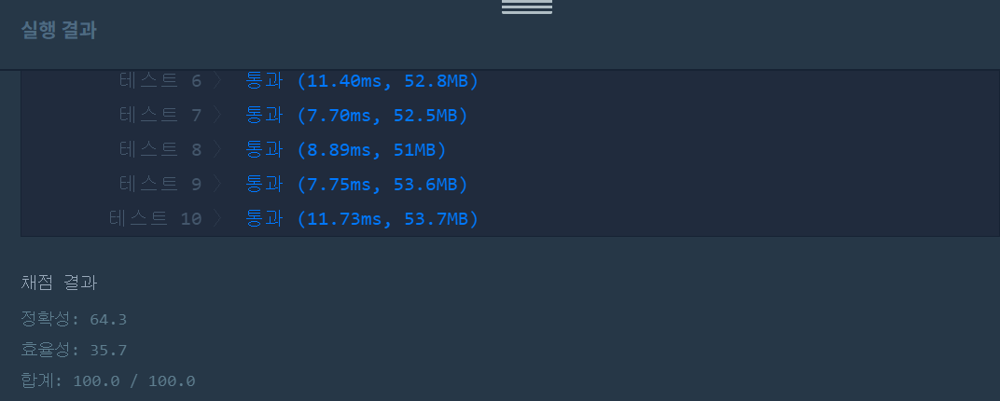

문제
https://programmers.co.kr/learn/courses/30/lessons/43105
( ᐛ )و 도전
1. 설계
- 배열을 이용해 위아래 서로간 대각선 합을 저장한다.
- 맨 마지막 행에서 최댓값을 리턴한다.
2. 구현 (성공 코드)
import java.util.*;
/**
*
* @author HEESOO
*
*/
class Solution {
public int solution(int[][] triangle) {
int answer = 0;
int sum[][]=new int[triangle.length][triangle.length];//합을 저장할 배열
sum[0][0]=triangle[0][0];
for(int i=1;i<triangle.length;i++){//가장 왼쪽과 오른쪽은 다음 위치가 지정되어있음
sum[i][0]=sum[i-1][0]+triangle[i][0];
sum[i][i]=sum[i-1][i-1]+triangle[i][i];
}
for(int i=2;i<triangle.length;i++){//현재 위치로 올 수 있는 이전 줄 대각선 왼쪽 오른쪽 중 최댓값을 선택
for(int j=1;j<i;j++){
sum[i][j]=Math.max(sum[i-1][j-1],sum[i-1][j])+triangle[i][j];
}
}
int max=sum[sum.length-1][0];
for(int j=1;j<sum.length;j++){//마지막 행에서 최댓값을 선택
max=Math.max(max, sum[sum.length-1][j]);
}
answer=max;
return answer;
}
}
3. 결과
 성공٩(˘◊˘)۶
4. 설명
- 위에서부터 삼각형 원소간의 합을 누적 계산한다.
- 이때 가장 왼쪽, 오른쪽 원소는 다음 이동이 지정되어있으므로 미리 계산해둔다.
- 아래 칸으로 이동할 수 있는 방법이 두 개인 경우, 지금까지의 누적합에 두 방법을 더해서 더 큰 쪽을 선택한다.
- 마지막 행에서 최댓값을 선택한다.
- 마지막 행에서 여러 경로에 대한 결과값이 저장되므로 이들 중 최댓값이 answer이다.
해결 완료!
대충 어떻게 풀지는 느낌이 오는데 어떤 자료구조를 선택해야할지 등 세세한 부분에서 계속 막힌다.
참고
- [프로그래머스, 자바] 정수 삼각형 - 동적계획법 https://lkhlkh23.tistory.com/117